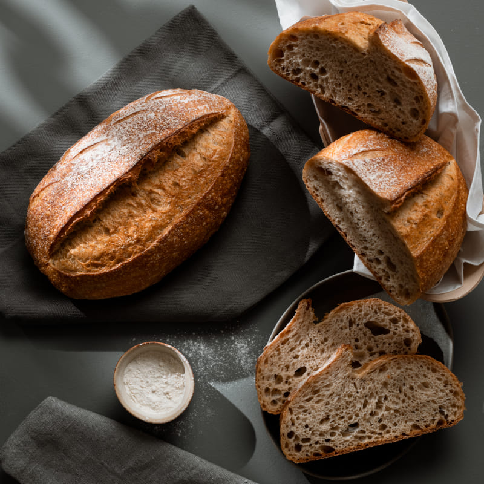
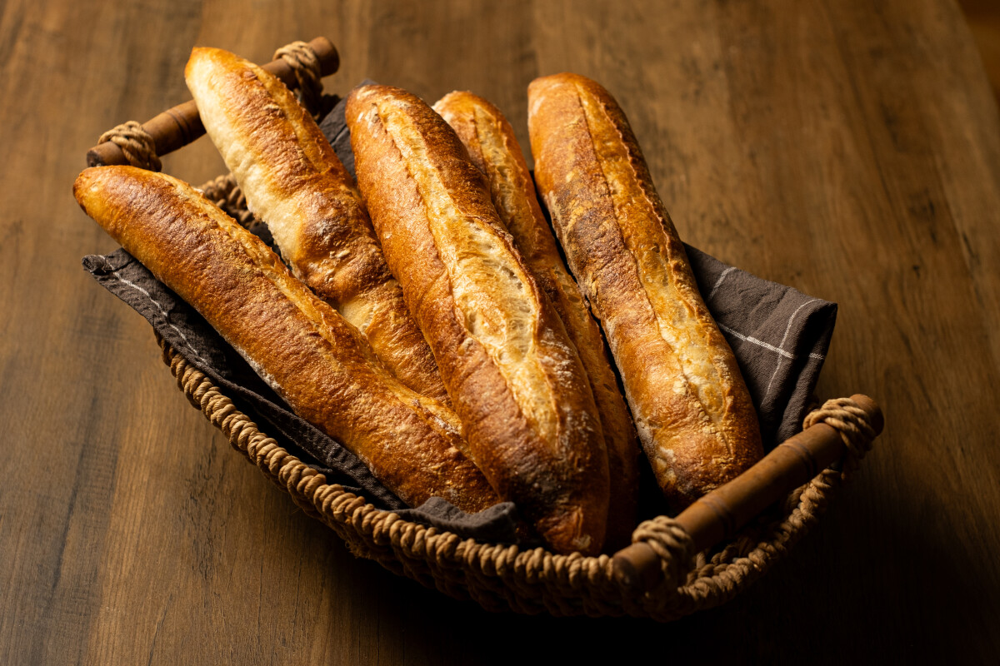

Mindennapi kenyérválasztékunk alapját a hagyományos élesztős, illetve a lassú érlelésű kovászos eljárással sütött fehér, félbarna és burgonyás kenyerek adják. Kínálatunkban tudatosan megkülönböztetjük a magasabb rozsliszt-tartalmú, tömörebb és hosszan friss maradó rozskenyeret, valamint a búzaliszttel lazított, puhább bélzetű rozsos kenyeret, amelyeket gyakran egész köménymaggal fűszerezve készítünk.

A rostban gazdagabb táplálkozást kedvelők számára készítjük a teljes búzaszemet - így a korpát és a csírát is - tartalmazó, durvább őrlésű Graham-kenyerünket. Mellette a különféle olajos magvakkal (napraforgó-, len-, tök- és szezámmaggal) kívül-belül gazdagított magvas teljes kiőrlésű kenyér kínál tartalmas ízvilágot és ropogós héjat.

pékségünk névadójaként a francia eredetű baguette többféle változatban - klasszikus fehér, kovászos, teljes kiőrlésű, valamint magvas (szezámmagos, lenmagos, mákos) szórással - is elérhető kínálatunkban. Mellette két olasz pékáru is helyet kapott: az olívaolajjal készülő, nagy lyukacsos ciabatta (natúr, olívabogyós, aszalt paradicsomos) és a ropogós héjú sfilatino (rusztikus, szezámmagos).
| Kategória | Megnevezés | Elérhető kiszerelések | Értékesítés | Szeletelés |
|---|---|---|---|---|
| Klasszikus kenyerek | Fehér kenyér, félbarna kenyér | 0,5 kg / 0,75 kg / 1 kg | Súlyra (kg) | Egészben vagy szeletelve |
| Rozsos és teljes kiőrlésű | Rozskenyér, rozsos kenyér, Graham-kenyér, magvas teljes kiőrlésű kenyér | 0,4 kg / 0,5 kg / 0,75 kg | Súlyra (kg) | Egészben vagy szeletelve |
| Francia pékáru | Baguette | ~ 250–300 g (egész) / ~ 150 g (fél) | Darabra (db) | Egészben |
| Olasz pékáruk | Ciabatta, Sfilatino | ~ 120 g (Ciabatta) / ~ 250–300 g (Sfilatino) | Darabra (db) | Egészben |